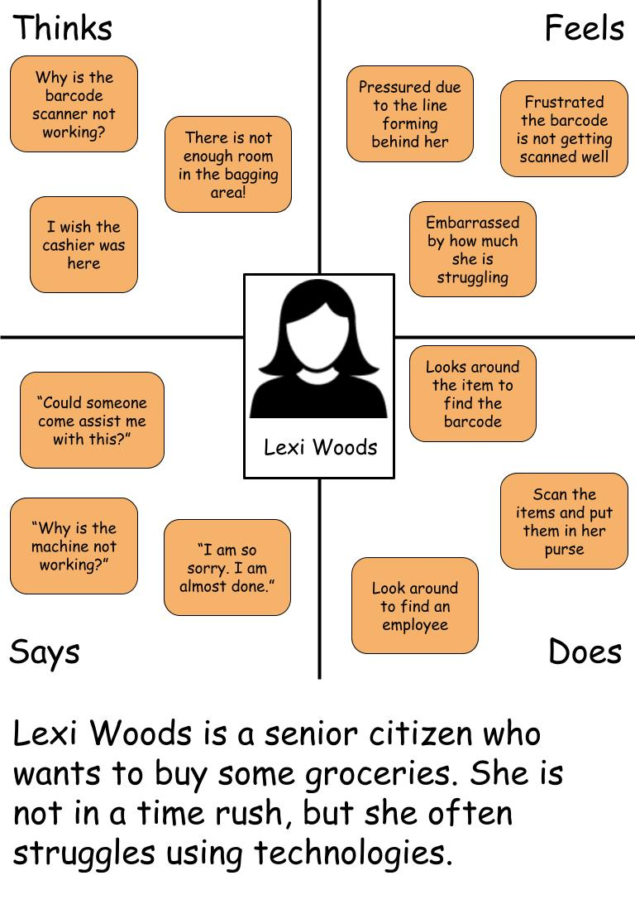
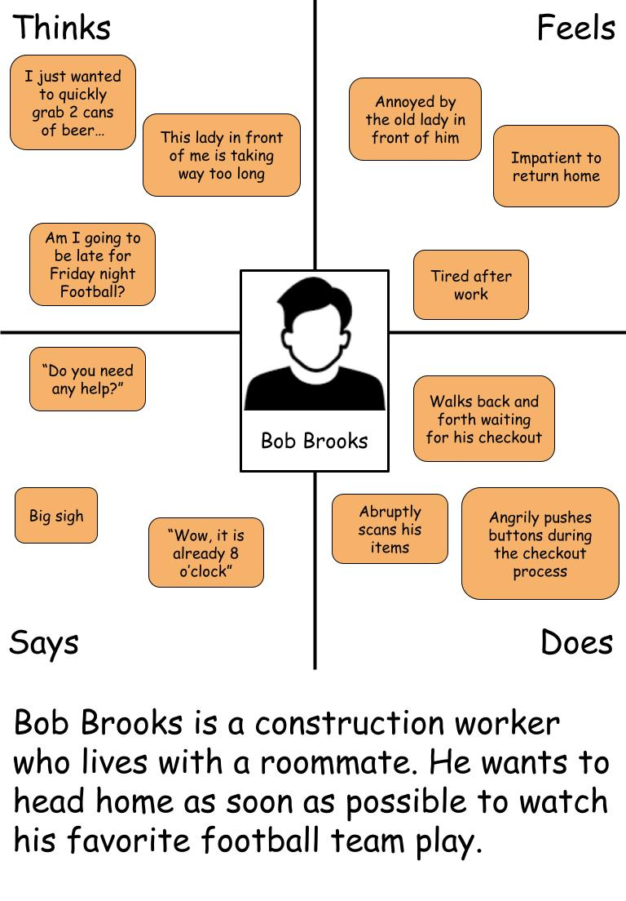
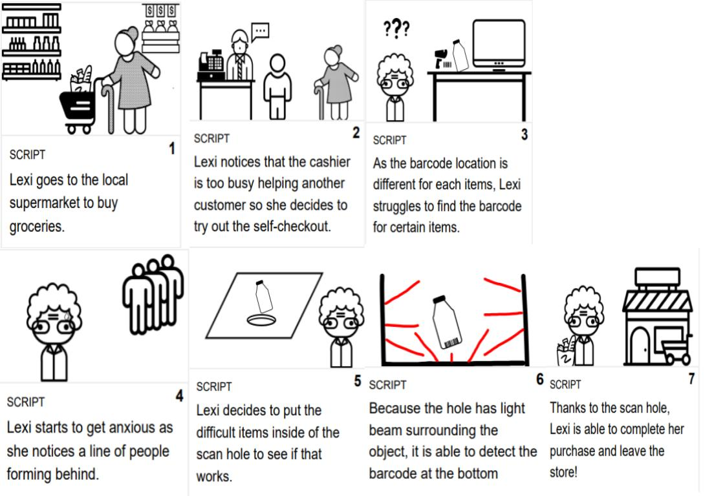

The mission of this project is to improve an existing interface that is widely used in everyday life by gathering data about user experience. This project will handle the self-checkout machine. I made user observations in order to discover potential problems that may occur in the process of using the original interface. Using those observations, I was able to find areas that could be improved on and created an interface that may solve some of the problems
I went to a local marketplace and observed multiple users' interactions with the self-checkout machine. I interviewed 3 individuals to further understand their expectations, experiences, motives, and challenges.
Key Observations
Interview Q&A
It was clear to see that people who use self-checkout prefer speedy checkouts. Some obstacles that may interfere with this goal include bagging and scanning problems. The new interface I designed aims to solve the scanning problem. It is a hole that you can put your item into. It will have a reflective light trying to detect the barcode from every side of the object except the top. Ultimately, this should prevent the users from spending too much time trying to find the barcode as they have an alternative solution.
I used an empathy map to construct two personas that represent the target users.
Lexi is an old user who is not proficient in technology. Even though the self-checkout machine is one of the simipler machines, people like Lexi can still struggle. The newly designed interface "Scan Hole" can help users who struggle with barcodes by making the process much easier. Even if the user does not locate the barcode, the user can put the item inside of the hole and it will still be scanned.
Bob is a great representation of most users of the self-checkout machine. Most of the users do not face much difficulties using the interface. However, if other users in front of you struggles with the interface, even though Bob can complete the purchase quickly, he needs to wait for the users in front of him. The new interface can indirectly help people like Bob who does not want to wait too long for other users.
I chose Lexi for the Storyboard as users like Lexi directly benefits from the new interface.
It is hard to say how successful this interface would be as I have not created a physical model nor performed clinical tests among users. However, this type of improvement has nothing to lose. Hole scan does not take any extra space as it would be a flat surface without the hole; the space will be taken regardless. Hole scan rather offers an alternative solution for users who struggle to find the barcode. Most users who are proficient in technology can continue to use the scanner on the front.